Every picture is a screenshot of the app. The first design is built. The other three are directions that were tried and removed. The bar's designs are on their own page.
The cases: distance, velocity, and energy against time; a loan balance against years for three interest rates; CO2 per mile against fuel economy; and an empty plot.
What it is. Each input has a filled tab on the left edge, as on the bar. A series' tab has its colour, its name, and its number. The x input's tab is grey, at the x axis. Series of one kind share a panel. Each other kind has a panel of its own, and all panels share the x axis.
Why. The tab is the legend and the end of the edge, so the chart needs no legend row. A panel for each kind gives every series a true scale, and a plot can hold any number of kinds. Distance, velocity, and energy were an error before.
Trade-off. Each panel is shorter than one shared chart. Two series of different kinds cannot cross each other. The tabs make the node wider on its left.
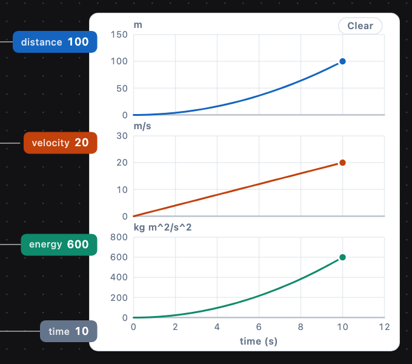
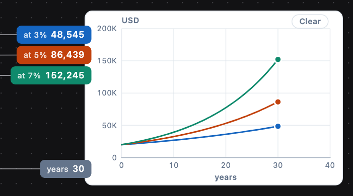
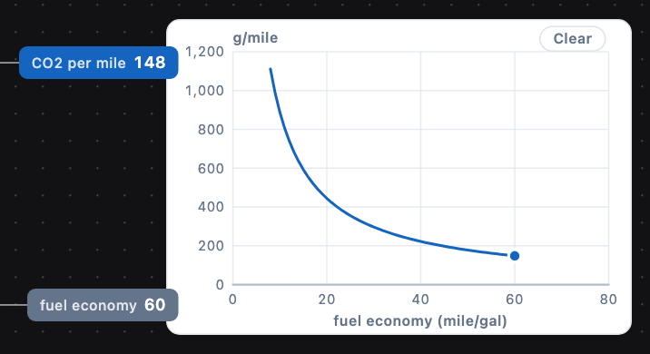
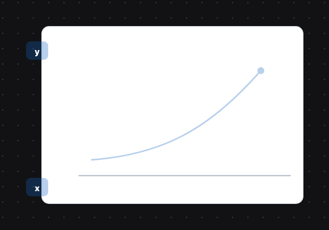
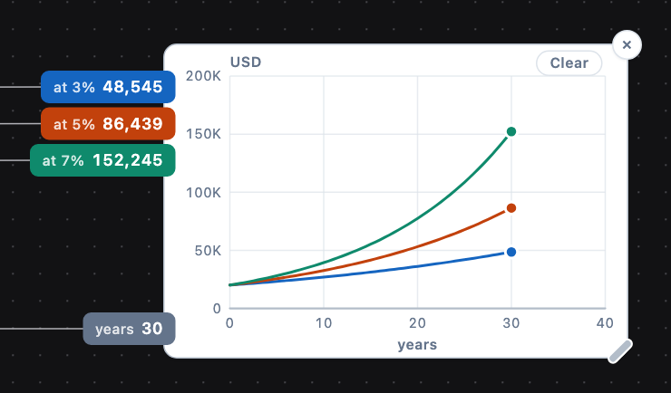
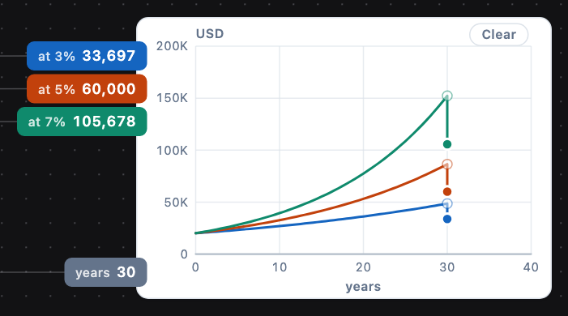
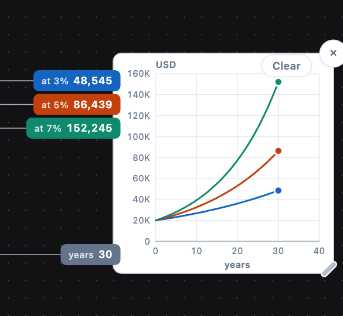
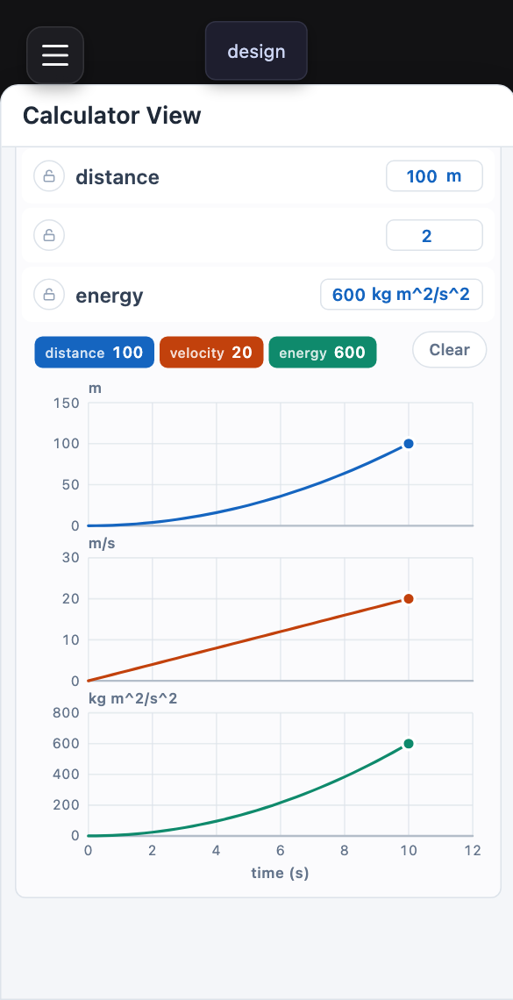
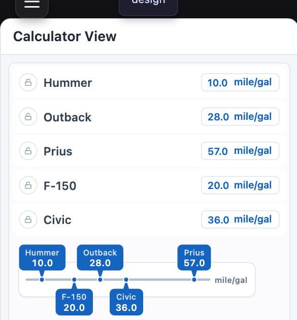
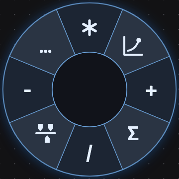
What it is. The tabs of design 1, with every series in one frame. A second kind has its numbers on the right. This is how the plot was drawn before, in the new style.
Why. The chart is as tall as it can be, and it is one picture.
Trade-off. Where two lines cross means nothing, because their scales differ. It is hard to see which line belongs to which axis. A third kind has no axis: energy below is drawn against numbers that are not shown.
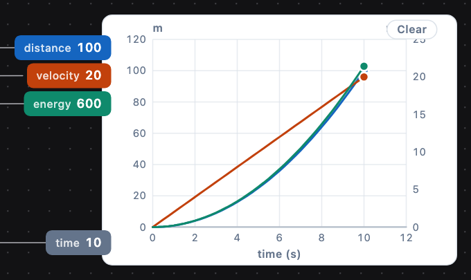
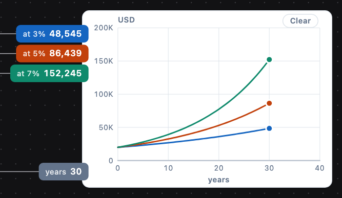
What it is. The names and numbers are in a row above the chart. Each edge ends at a small round chip in the series' colour.
Why. The node is narrow, with nothing hanging far past its left edge.
Trade-off. The row takes height and runs into the Clear button. A chip does not say which value it is, so the eye goes from the edge to the row and back.
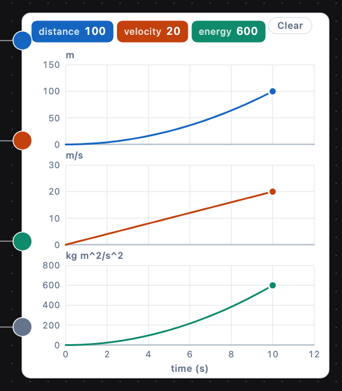
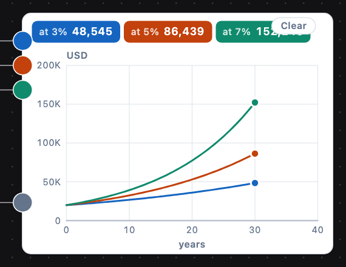
What it is. Each series' name and number are written beside its point, in its colour. The edge ends at a round chip.
Why. The label is where the eye already is, so no legend is needed.
Trade-off. A label near the right edge is cut off. Labels cover each other when points are close. The text moves while a value is scrubbed, which is hard to read.
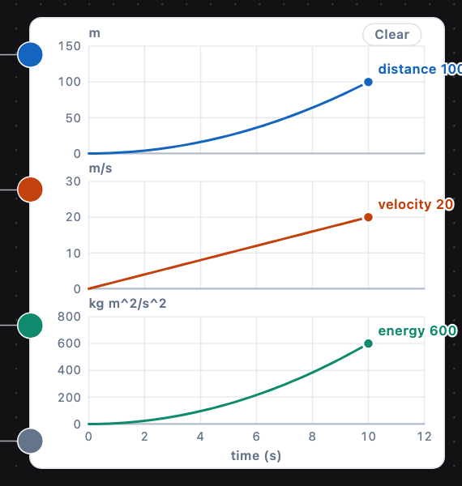
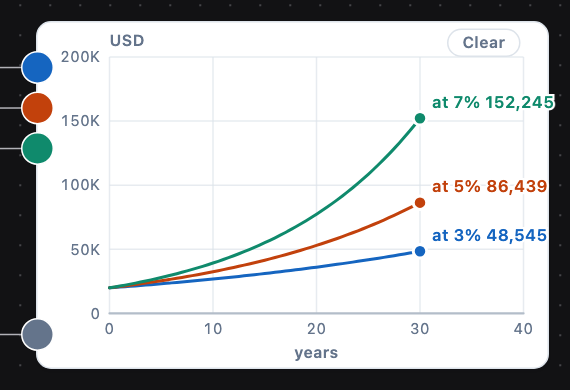